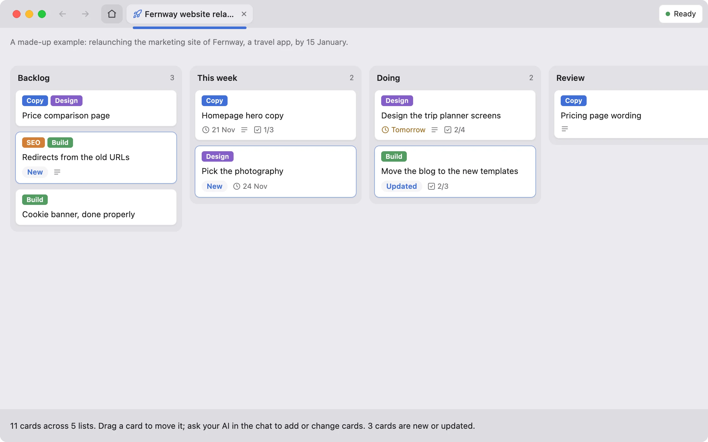

A board for each plan
A project, a hire, a move, an event: each is a board of lists in order, such as To do, Doing and Done, or the stages of the work. Each board opens in a tab of its own.
BetaUse with SmartDesktop or your own AI agent
Running a project? Tell your AI what it is and when it’s due, and it sets out a board: lists for each stage, and a card for each piece of work, with labels, due dates and checklists. Drag cards along as the work moves.
SmartPlan is in beta, so it may change significantly from one version to the next.

What it does
Trello’s way of planning, without the rest of Atlassian: no workspaces to set up, no power-ups, no account. Your AI does the writing, and you keep the work moving.
A project, a hire, a move, an event: each is a board of lists in order, such as To do, Doing and Done, or the stages of the work. Each board opens in a tab of its own.
A card is a piece of work: a short title, and if it needs them, a description, coloured labels, a due date and a checklist. Dates coming up and overdue stand out.
Say what you’re planning, and your AI sets out the board. Ask it to add cards, split one up, tick things off or plan next week. Cards it adds or changes are marked until you’ve opened them.
Drag a card to another list as the work moves, or up and down to reorder. Your AI hears what you moved, and leaves your moves as they are.
Install
Two ways to work with your AI, and you can use both.
SmartDesktop is the chat for the family’s apps: your own Claude or ChatGPT, signed in with your own account, in one conversation across them. Two steps, and nothing to type in Terminal. More about SmartDesktop
Open the download and run Install SmartPlan. It puts SmartPlan in your Applications folder, with SmartDesktop, the chat with your AI, if you don’t have it yet.
Open SmartPlan, and choose Window › Show the Chat (⇧⌘C). Choose Claude or ChatGPT: if it isn’t set up yet, SmartDesktop installs it with its maker’s own installer and opens their sign-in page. SmartDesktop never sees your sign-in.
Claude Desktop, Claude Code and any AI agent that runs MCP servers can work in SmartPlan directly, without SmartDesktop. Connect yours below. After that, it opens SmartPlan by itself whenever it needs it.
SmartPlan adds itself.
If the status says Not running, another copy of SmartPlan is probably open: quit SmartPlan everywhere, then open it again. Or add it yourself: in Claude Desktop, open Settings → Developer → Edit Config, and add the entry from the Other AI apps tab.
Add it with one command.
claude mcp add --scope user smartplan -e ELECTRON_RUN_AS_NODE=1 -- /Applications/SmartPlan.app/Contents/MacOS/SmartPlan /Applications/SmartPlan.app/Contents/Resources/cli/mcp.jsOr, with Node.js, run npx @smartplan/cli setup, which sets up Claude Code and Claude Desktop for you.
Any AI app that runs MCP servers can use SmartPlan.
{
"mcpServers": {
"smartplan": {
"command": "/Applications/SmartPlan.app/Contents/MacOS/SmartPlan",
"args": [
"/Applications/SmartPlan.app/Contents/Resources/cli/mcp.js"
],
"env": {
"ELECTRON_RUN_AS_NODE": "1"
}
}
}
}SmartPlan runs its connection itself, so there’s nothing else to install.
No account, no trial, no paid plan: SmartPlan is released under the MIT licence. In beta, and still changing significantly.